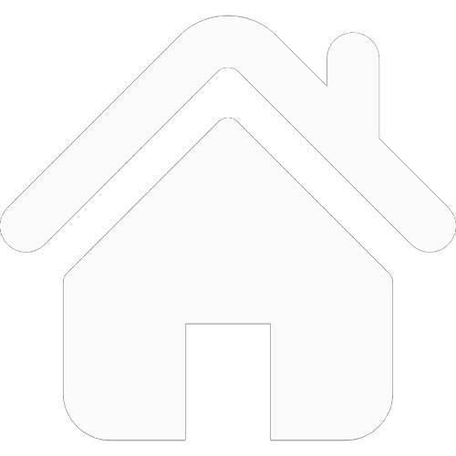

首页
- 我国近年科技2016年8月16日我国发射世界首颗量子科学实验卫星“墨子号”
- 500米口径球面射电望远镜截至2018年9月12日，500米口径球面射电望远镜已发现59颗优质的脉冲星候选体，其中有44颗已被确认为新发现的脉冲星。
- 世界最快的超级计算机“神威太湖之光"被誉为“国之重器”的超级计算机“神威·太湖之光”已连续四年获得全球超算500强第一名,是世界上运算能力最强、速度最快的超级计算机。
- 中国造出世界最大起重船振华重工自主建造的世界最大12000吨起重船在上海长兴岛基地交付，并在现场命名为“振华30号”。该船总重约14万吨，吃水大，以单臂架12000吨的固定吊重能力和7000吨360度全回转的吊重能力位居世界第一。
- 歼20身穿迷彩服亮相珠海航展歼-20作为第五代战斗机，它能够在数架歼-20之间实现探测情报共享，从而大大拓展每架飞机的态势感知空域。
- 高铁总里程达两万公里郑（州）徐（州）高铁正式开通运营，标志着中国高铁运营里程突破2万公里。中国不仅是高铁里程最长的国家，而且高铁的安全运输规模也是世界上最大的